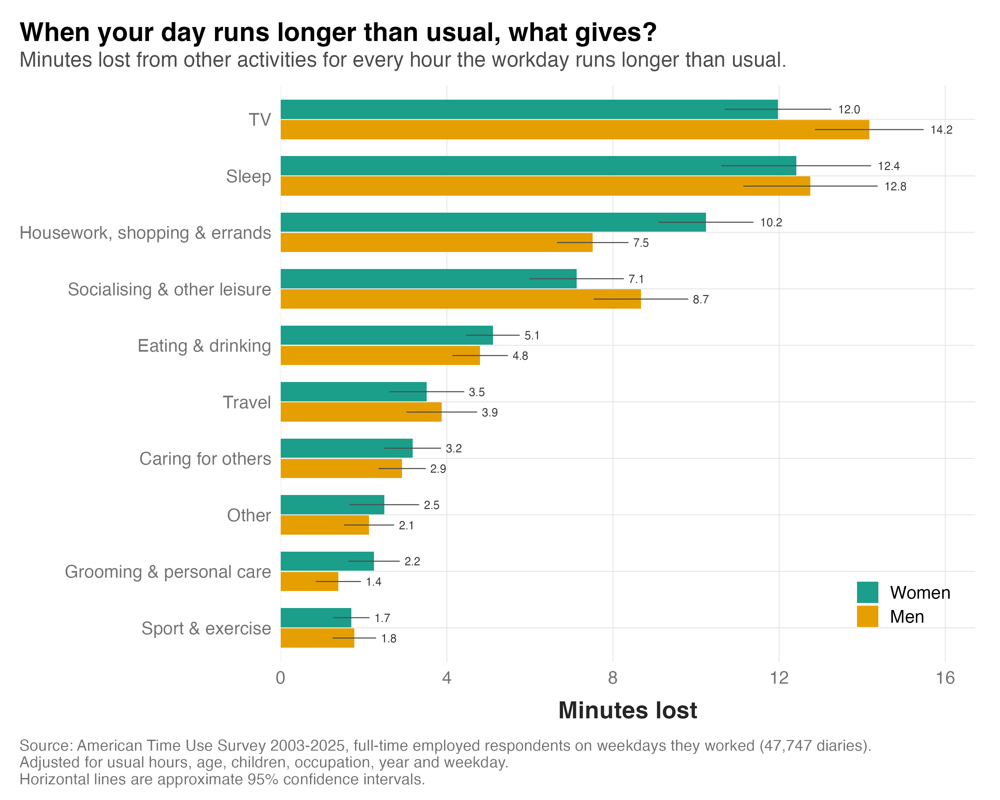

I've written several posts recently about the length of the workday, and how that may or may not be changing over time for different occupations. An interesting follow-up question is what actually happens when the workday runs longer than it usually does. What other activities get sacrificed when work takes up more of the day?
Data from the American Time Use Survey can help us answer this question. Each year, thousands of Americans complete a diary of everything they did over a single 24-hour day. Because the diary covers the whole day, every extra minute at work has to come out of something else.
I used 47,747 diaries from full-time workers on weekdays they worked between 2003 and 2025. I compared the hours each person worked that day with their usual day, based on the hours they said they usually work each week, and estimated how many minutes each other activity lost for every hour the day ran over.
So what gives when we work longer than usual?

1) TV and sleep are the biggest losers. Each extra hour at work costs about 13 minutes of TV and 13 minutes of sleep. Together, that's close to half of the hour.
2) Housework and socialising are next, at about 9 and 8 minutes. Combined with TV and sleep, these account for around 70 per cent of the extra hour.
3) Men and women lose the same amount of sleep, but differ elsewhere. Women give up more housework, shopping and errands (10.2 minutes vs 7.5 for men), while men give up more TV (14.2 vs 12.0). For the remaining activities, there were no significant differences between men and women.
A long day is paid for mostly out of the evening, and in particular out of rest. Missing out on TV may not be a huge deal. But losing out on sleep is more problematic, because sleep debt accumulates.
The gender differences are interesting too. On a long day, women give up more housework, shopping and errands than men do. Do those tasks just go undone, or do they get caught up later?
Also insightful is framing the question in the opposite direction: when the workday is shorter than usual, how do people spend the extra time?
As it turns out, the results are the same but in reverse. Men spend more of this extra time watching TV than women do. And women spend more of it on housework, shopping and errands than men do. So for women, housework seems to be the part of the day that stretches and shrinks around work, and for men it is TV. This fits with the notion that women still carry more of the household load. Those tasks have to get done eventually, so they are put off on long days and done on short ones.